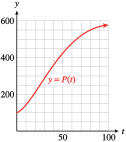

Exercises Chapter 5 Review Problems
Exercise Group.
For Problems 1–4, make a table of values for the inverse function.
1.
\(f(x) = x^3 + x + 1\)
2.
\(g(x)=x+6\sqrt[3]{x} \)
3.
\(g(w)=\dfrac{1+w}{w-3} \)
4.
\(f(n)=\dfrac{n}{1+n} \)
Exercise Group.
For Problems 5–6, use the graph to find the function values.
5.

\(\displaystyle P^{-1}(350) \)
\(\displaystyle P^{-1}(100) \)
6.
\(\displaystyle H^{-1}(200) \)
\(\displaystyle H^{-1}(75) \)
Exercise Group.
For Problems 7–12,
Find a formula for the inverse \(f^{-1} \) of each function.
Graph the function and its inverse on the same set of axes, along with the graph of \(y=x\text{.}\)
7.
\(f(x)=x+4 \)
8.
\(f(x)=\dfrac{x-2}{4} \)
9.
\(f(x)=x^3-1 \)
10.
\(f(x)=\dfrac{1}{x+2} \)
11.
\(f(x)=\dfrac{1}{x}+2 \)
12.
\(f(x)=\sqrt[3]{x}-2 \)
13.
If \(F(t) = \dfrac{3}{4}t + 2\text{,}\) find \(F^{-1}(2)\text{.}\)
14.
If \(G(x) = \dfrac{1}{x}-4\text{,}\) find \(G^{-1}(3)\text{.}\)
15.
The table shows the revenue, \(R\text{,}\) from sales of the Miracle Mop as a function of the number of dollars spent on advertising, \(A\text{.}\) Let \(f\) be the name of the function defined by the table, so \(R = f (A)\text{.}\)
\(A\) (thousands
of dollars) |
\(100\) |
\(150\) |
\(200\) |
\(250\) |
\(300\) |
\(R\) (thousands
of dollars) |
\(250\) |
\(280\) |
\(300\) |
\(310\) |
\(315\) |
Evaluate \(f^{ -1}(300)\text{.}\) Explain its meaning in this context.
Write two equations to answer the following question, one using \(f\) and one using \(f^{ -1}\text{:}\) How much should we spend on advertising to generate revenue of \(\$250,000\text{?}\)
16.
The table shows the systolic blood pressure, \(S\text{,}\) of a patient as a function of the dosage, \(d\text{,}\) of medication he receives. Let \(g\) be the name of the function defined by the table, so \(S = g(d)\text{.}\)
|
\(d\) (mg) |
\(190\) |
\(195\) |
\(200\) |
\(210\) |
\(220\) |
|
\(S\) (mm Hg) |
\(220\) |
\(200\) |
\(190\) |
\(185\) |
\(183\) |
Evaluate \(g^{ -1}(200)\text{.}\) Explain its meaning in this context.
Write two equations to answer the following question, one using \(g\) and one using \(g^{ -1}\text{:}\) What dosage results in systolic blood pressure of \(220\text{?}\)
Exercise Group.
For Problems 17–24, write the equation in exponential form.
17.
\(\log_{10} 0.001 = z\)
18.
\(\log_{3} 20 = t\)
19.
\(\log_{2} 3 = x-2\)
20.
\(\log_{5} 3 = 6-2p\)
21.
\(\log_{b} (3x+1) = 3\)
22.
\(\log_{m} 8 = 4t\)
23.
\(\log_{n} q = p-1\)
24.
\(\log_{q} (p+2) = w\)
Exercise Group.
For Problems 25–28, simplify.
25.
\(10^{\log 6n} \)
26.
\(\log 100^x \)
27.
\(\log_2 4^{x+3} \)
28.
\(3^{2\log_3 t} \)
Exercise Group.
For Problems 29–36, solve.
29.
\(\log_{3}\dfrac{1}{3}=y \)
30.
\(\log_{3}x=4 \)
31.
\(\log_{2}y=-1 \)
32.
\(\log_{5}y=-2 \)
33.
\(\log_{b} 16=2 \)
34.
\(\log_{b}9=\dfrac{1}{2} \)
35.
\(\log_{4}\left(\dfrac{1}{2}t+1\right)=-2 \)
36.
\(\log_{2}(3x-1)=3 \)
Exercise Group.
For Problems 37–40, solve.
37.
\(\log_3 x + \log_3 4 = 2\)
38.
\(\log_2(x + 2) - \log_2 3 = 6\)
39.
\(\log_{10}(x-1) + \log_{10} (x+2) = 1\)
40.
\(\log_{10}(x + 2) - \log_{10} (x-3) = 1\)
Exercise Group.
For Problems 41–46, solve.
41.
\(e^x=4.7 \)
42.
\(e^x=0.5 \)
43.
\(\ln x =6.02 \)
44.
\(\ln x=-1.4 \)
45.
\(4.73=1.2e^{0.6x} \)
46.
\(1.75=0.3e^{-1.2x} \)
Exercise Group.
For Problems 47–50, simplify.
47.
\(e^{(\ln x)/2} \)
48.
\(\ln \left(\dfrac{1}{e} \right)^{2n} \)
49.
\(\ln \left(\dfrac{e^k}{e^3} \right) \)
50.
\(e^{\ln(e+x)} \)
51.
In 1970, the population of New York City was \(7,894,862\text{.}\) In 1980, the population had fallen to \(7,071,639\text{.}\)
Write an exponential function using base \(e\) for the population of New York over that decade.
By what percent did the population decline annually?
52.
In 1990, the population of New York City was \(7,322,564\text{.}\) In 2000, the population was \(8,008,278\text{.}\)
Write an exponential function using base \(e\) for the population of New York over that decade.
By what percent did the population increase annually?
53.
You deposit $\(1000\) in a savings account paying \(5\%\) interest compounded continuously.
Find the amount in the account after \(7\) years.
How long will it take for the original principal to double?
Find a formula for the time \(t\) required for the amount to reach \(A\text{.}\)
54.
The voltage, \(V\text{,}\) across a capacitor in a certain circuit is given by the function
\begin{equation*}
V(t) = 100(1-e^{-0.5t})
\end{equation*}
where \(t\) is the time in seconds.
Make a table of values and graph \(V(t)\) for \(t = 0\) to \(t = 10\text{.}\)
Describe the graph. What happens to the voltage in the long run?
How much time must elapse (to the nearest hundredth of a second) for the voltage to reach \(75\) volts?
55.
Solve for \(t\text{:}\) \(~~y = 12 e^{-kt} + 6\)
56.
Solve for \(k\text{:}\) \(~~N = N_0 + 4 \ln(k + 10)\)
57.
Solve for \(M\text{:}\) \(~~Q=\dfrac{1}{t}\left(\dfrac{\log M}{\log N} \right) \)
58.
Solve for \(t\text{:}\) \(~~C_H = C_L\cdot 10^{k}t \)
59.
Express \(P(t) = 750e^{0.32t}\) in the form \(P(t) = P_0b^t\text{.}\)
60.
Express \(P(t) = 80e^{-0.6t}\) in the form \(P(t) = P_0 b^t\text{.}\)
61.
Express \(N(t) =600(0.4)^{t}\) in the form \(N(t) = N_0 e^{kt}\text{.}\)
62.
Express \(N(t) =100(1.06)^{t}\) in the form \(N(t) = N_0 e^{kt}\text{.}\)
63.
Plot the values on a log scale.
| \(x\) |
\(0.04\) |
\(45\) |
\(1200\) |
\(560,000\) |
64.
Plot the values on a log scale.
| \(x\) |
\(0.0007\) |
\(0.8\) |
\(3.2\) |
\(2500\) |
65.
The graph describes a network of streams near Santa Fe, New Mexico. It shows the number of streams of a given order, which is a measure of their size. Use the graph to estimate the number of streams of orders \(3\text{,}\) \(4\text{,}\) \(8\text{,}\) and \(9\text{.}\) (Source: Leopold, Wolman, and Miller)
66.
Large animals use oxygen more efficiently when running than small animals do. The graph shows the amount of oxygen various animals use, per gram of their body weight, to run \(1\) kilometer. Estimate the body mass and oxygen use for a kangaroo rat, a dog, and a horse. (Source: Schmidt-Neilsen, 1972)
67.
The pH of an unknown substance is \(6.3\text{.}\) What is its hydrogen ion concentration?
68.
The noise of a leaf blower was measured at \(110\) decibels. What was the intensity of the sound waves?
69.
A refrigerator produces \(50\) decibels of noise, and a vacuum cleaner produces \(85\) decibels. How much more intense are the sound waves from a vacuum cleaner than those from a refrigerator?
70.
In 2004, a magnitude \(9.0\) earthquake struck Sumatra in Indonesia. How much more powerful was this quake than the 1906 San Francisco earthquake of magnitude \(8.3\text{?}\)